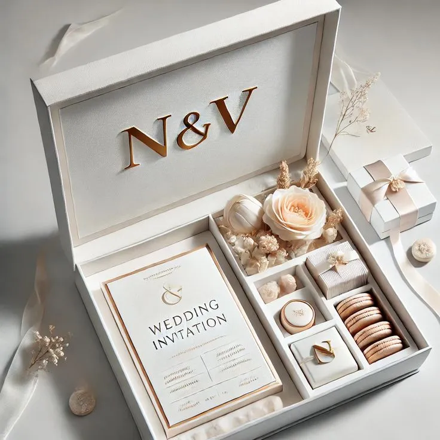

Estetika Souvenir Berbahan Dasar Kayu untuk Tema Rustic
15 Juni 2026 | Waktu baca: 4 menit

Daftar Isi
1. Keunikan Serat Alami Kayu
Tidak ada dua potong kayu yang memiliki corak serat yang persis sama. Hal ini membuat setiap *pieces* souvenir kayu yang Anda berikan kepada tamu menjadi *limited edition* (satu-satunya di dunia). Corak alami ini menciptakan nilai estetika yang tinggi tanpa perlu banyak polesan pewarna buatan.
2. Fleksibilitas dalam Berbagai Bentuk
Kayu sangat mudah dibentuk menjadi aneka barang fungsional. Mulai dari telenan mini, sendok garpu, jam meja, kotak perhiasan, hingga *flashdisk* berlapis kayu jati. Terlebih lagi, material ini sangat sempurna jika dipadukan dengan teknik *laser engraving* (grafir) untuk membakar inisial nama Anda secara presisi di permukaannya.

3. Kesan Klasik dan Timeless (Tak Lekang Waktu)
Berbeda dengan bahan plastik atau akrilik yang trennya bisa berubah-ubah, estetika kayu bersifat *timeless*. Dari puluhan tahun lalu hingga sekarang, barang-barang dari kayu selalu mendapat tempat spesial. Nuansa coklat alaminya memberikan kehangatan visual yang menenangkan.
4. Mewakili Semangat Eco-Friendly
Souvenir dari kayu sangat mewakili gaya hidup sadar lingkungan. Kayu merupakan bahan yang mudah terurai (*biodegradable*) jika suatu saat nanti sudah tidak digunakan lagi. Memberikan souvenir ini secara tidak langsung membangun citra positif bagi penyelenggara acara atau perusahaan Anda.
Menentukan jenis kayu dan *finishing* pelapisnya juga sangat penting agar barang awet dan tidak berjamur. Tim Souveniria menggunakan bahan pelapis (*food grade coating* untuk alat makan) yang aman dan berstandar tinggi.